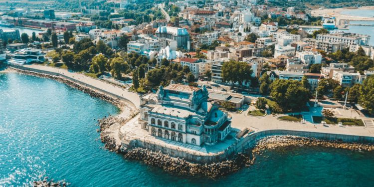
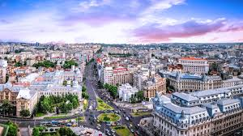

De ce Romania e o tara frumoasa
Indiferent de ceea ce se arata la suprafara, pe interior, Romania este o tara bogata in istorie, cultura, si oameni minunati ce emana o aura calda si primitoare.
O zicala veche ne spune ca nu exista padure fara uscaciuni asadar nu toti romanii sunt la fel de calzi cum s-ar spune. Din punctul meu de vedere cele mai minunate orase din Romania, bogate cu adevarat in istorie si pline de oameni minunati sunt urmatoarele:
Orase care te vor face sa mai vizitezi inca odata tara asta
Constanta
Un oras bogat in istorie, plin de turisti si mai ales plin de viata in sezonurile estivale!
O singura vizita pe plajele romanesti la Neversea te vor face sa ti doresti sa revii si anul viitor.

Bucuresti
Capitala tarii si centrul cultural, Bucuresti-ul este inima Romaniei.
Anual se organizeaza concenrte de mari dimensiuni, intalniri importante, jocuri sportive, orasul gazduieste competitii nationale si internationale de sport, cultura,gaming si multe altele.
Bucurestiul nu este un simplu oras este inima tarii care bate neincetat, orasul care nu doarme niciodata.

Curtea de Arges
Plin de istorie si de oameni cumsecade acest mic orasel te va face sa te bucuri din plin de linistea si pacea de mult asteptata, asta desigur daca ai optat pentru o vacanta linistita in schimbul uneia de lux!